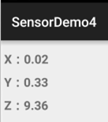
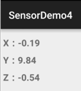
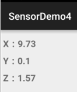

本节の引言：
本节では引き続きAndroidのセンサーを詳しく見ていきます。本节で取り上げるのは加速度センサー(Accelerometer sensor)とジャイロスコープセンサー(Gyroscope sensor)です。前節の方向センサーと同じくx、y、zの3つの軸があります。もう一つ言っておきたいのは、x、y軸の座標は描画の際のx、y軸とは区別してください！センサーは左下隅を原点としています！xは右向き、yは上向きです！では、いつものやり方で本节のセンサーを学んでいきましょう！
また、一つ言っておきたいのは、私たちはこれを専門にやっているわけではなく、何か書いて遊んだり、ちょっと体験するだけのことです。多くのことをあまり真剣に考えすぎないでください！
PS:方向センサーは実は加速度センサーと磁場センサーを利用して方位を取得していたもので、2.2から非推奨になりました~
1.加速度センサー(Accelerometer sensor)
1）用語の概念：
- 加速度センサーの単位：加速度(m/s^2)
- 方向センサーで取得される加速度は：スマホの運動の加速度と重力加速度(9.81m/s^2)の合成加速度
- また、重力加速度は垂直下向きです！
この異なる方向の合成加速度の計算はかなり複雑そうなので、ここでは深く考えないことにします！まず加速度のvalue配列の3つの値を見てみましょう〜引き続き前節のコードで、センサーを変えるだけです〜
水平に置いた場合：

縦に立てた場合：
横に倒した場合：
上記から、value配列の3つの値はそれぞれX、Y、Z軸上の加速度に対応していることがわかります！では、大体を把握したところで、簡単な歩数計を書いて使い方に慣れてみましょう！
2）簡単な歩数計の実装
実行結果のスクリーンショット：

コード実装：
レイアウトコード：activity_main.xml：
<LinearLayout xmlns:android="http://schemas.android.com/apk/res/android"
android:layout_width="match_parent"
android:layout_height="match_parent"
android:orientation="vertical"
android:padding="5dp">
<TextView
android:layout_width="wrap_content"
android:layout_height="wrap_content"
android:layout_gravity="center_horizontal"
android:layout_marginTop="30dp"
android:text="简易计步器"
android:textSize="25sp" />
<TextView
android:id="@+id/tv_step"
android:layout_width="wrap_content"
android:layout_height="wrap_content"
android:layout_gravity="center_horizontal"
android:layout_marginTop="5dp"
android:text="0"
android:textColor="#DE5347"
android:textSize="100sp"
android:textStyle="bold" />
<Button
android:id="@+id/btn_start"
android:layout_width="match_parent"
android:layout_height="64dp"
android:text="开始"
android:textSize="25sp" />
</LinearLayout>
MainActivity.java：
public class MainActivity extends AppCompatActivity implements View.OnClickListener, SensorEventListener {
private SensorManager sManager;
private Sensor mSensorAccelerometer;
private TextView tv_step;
private Button btn_start;
private int step = 0; //步数
private double oriValue = 0; //原始值
private double lstValue = 0; //上次的值
private double curValue = 0; //当前值
private boolean motiveState = true; //是否处于运动状态
private boolean processState = false; //标记当前是否已经在计步
@Override
protected void onCreate(Bundle savedInstanceState) {
super.onCreate(savedInstanceState);
setContentView(R.layout.activity_main);
sManager = (SensorManager) getSystemService(SENSOR_SERVICE);
mSensorAccelerometer = sManager.getDefaultSensor(Sensor.TYPE_ACCELEROMETER);
sManager.registerListener(this, mSensorAccelerometer, SensorManager.SENSOR_DELAY_UI);
bindViews();
}
private void bindViews() {
tv_step = (TextView) findViewById(R.id.tv_step);
btn_start = (Button) findViewById(R.id.btn_start);
btn_start.setOnClickListener(this);
}
@Override
public void onSensorChanged(SensorEvent event) {
double range = 1; //设定一个精度范围
float[] value = event.values;
curValue = magnitude(value[0], value[1], value[2]); //计算当前的模
//向上加速的状态
if (motiveState == true) {
if (curValue >= lstValue) lstValue = curValue;
else {
//检测到一次峰值
if (Math.abs(curValue - lstValue) > range) {
oriValue = curValue;
motiveState = false;
}
}
}
//向下加速的状态
if (motiveState == false) {
if (curValue <= lstValue) lstValue = curValue;
else {
if (Math.abs(curValue - lstValue) > range) {
//检测到一次峰值
oriValue = curValue;
if (processState == true) {
step++; //步数 + 1
if (processState == true) {
tv_step.setText(step + ""); //读数更新
}
}
motiveState = true;
}
}
}
}
@Override
public void onAccuracyChanged(Sensor sensor, int accuracy) {}
@Override
public void onClick(View v) {
step = 0;
tv_step.setText("0");
if (processState == true) {
btn_start.setText("开始");
processState = false;
} else {
btn_start.setText("停止");
processState = true;
}
}
//向量求模
public double magnitude(float x, float y, float z) {
double magnitude = 0;
magnitude = Math.sqrt(x * x + y * y + z * z);
return magnitude;
}
@Override
protected void onDestroy() {
super.onDestroy();
sManager.unregisterListener(this);
}
}
はい、本当に非常に簡単な歩数計です...上の歩数は私が座って手で振って出したものです...、まあ書いて遊ぶだけのものですから〜
2.ジャイロスコープセンサー(Gyroscope sensor)
1）用語の概念：
ジャイロスコープは角速度センサーとも呼ばれ、一般的にスマホの姿勢を検出するために使われます。スマホのジャイロスコープセンサーは通常3軸のものが多いようです！体感ゲームで最も多く使われ、スマホの撮影手ブレ補正、GPS慣性航法、さらにアプリにモーションセンサーを追加する（例えばスマホを軽く振って着信音を消すなど）などに使われます。具体的なことは自分で百度で調べてみてください〜
- ジャイロスコープセンサーの単位：角速度(ラジアン/秒)radians/second
- センサーを取得するには：Sensor.TYPE_GYROSCOPE
その3つの値は順にX軸、Y軸、Z軸に沿って回転する角速度です。スマホが反時計回りに回転すると角速度の値は正になり、時計回りの場合は負の値になります！スマホが回転した角度を計算するのによく使われます！これはネット上のコードです〜
private static final float NS2S = 1.0f / 1000000000.0f;
private float timestamp;
public void onSensorChanged(SensorEvent event)
{
if (timestamp != 0)
{
// event.timesamp表示当前的时间，单位是纳秒（1百万分之一毫秒）
final float dT = (event.timestamp - timestamp) * NS2S;
angle[0] += event.values[0] * dT;
angle[1] += event.values[1] * dT;
angle[2] += event.values[2] * dT;
}
timestamp = event.timestamp;
}
ジャイロスコープセンサーで隣接する2回のデータ取得の時間差（dT）を用いて、この時間内にスマホがX、Y、Z軸に沿って回転した角度をそれぞれ計算し、値をangle配列の異なる要素にそれぞれ累積加算します
3.本节のサンプルコードダウンロード：
本节のまとめ：
はい、本节では皆さんに加速度センサーとジャイロスコープについて簡単に紹介し、簡単な歩数計を書いてみました。センサーはあまり遊んだことがなく、書くことがあまりない気がしますが、まあいいでしょう。次節では残りのセンサーを簡単に紹介するだけにします。まあ、科普（科学の普及）のようなものだと思って、後で使う必要が出てきたらまた深く研究しましょう〜